Back to the flip notebookQwen anatomy, the final 20
100 completed SVG illustrations, reviewed as rendered images, narrowed to 50, then these 20. Two finalists per subject, with Art A / Art B in the notebook using 16 of them. The skull and vertebra studies are bonus plates here.
Generated with free Qwen 4 Max. These are stylized anatomical studies, not photographs or a medically validated atlas. Some rib counts, vessels, tooth layers and organ proportions remain simplified. Do not use them for medical decisions or as an exact reference.
Contact sheet100-candidate CSVDownload all 100 SVGs
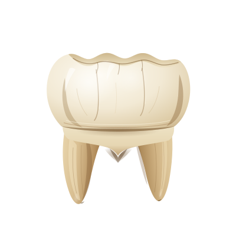
002 / tooth exteriorSoft enamel modelling and clear crown silhouette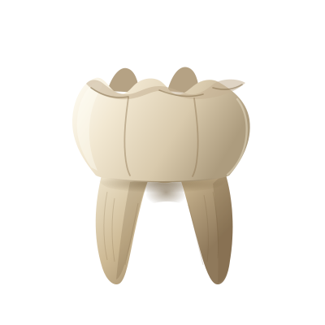
008 / tooth exteriorOrganic crown and subtle enamel tone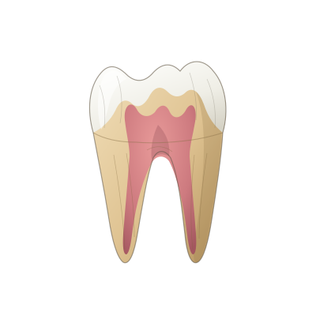
011 / tooth sectionClear enamel dentin and pulp layering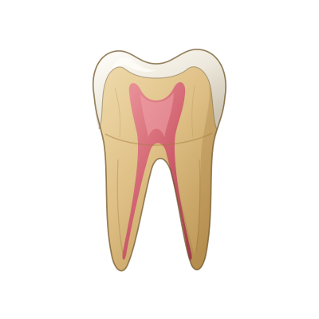
019 / tooth sectionClean section contours and fine graphite lines
024 / ribcageSeparated ribs and gentle bone shading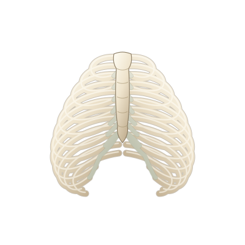
029 / ribcageFine pencil contours with dimensional sternum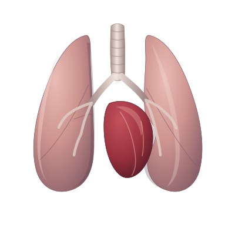
032 / lungsSoft lung volume and visible branching bronchi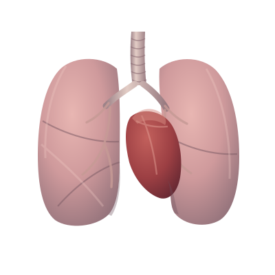
037 / lungsReadable lobe divisions and cardiac notch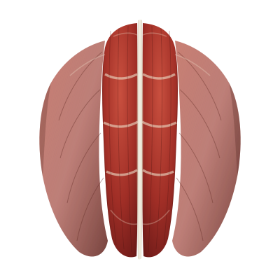
044 / abdominal wallPaired rectus and contrasting lateral fibers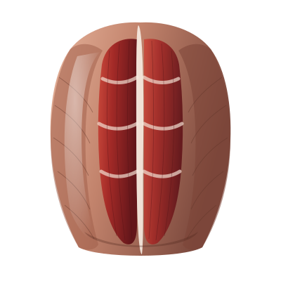
048 / abdominal wallLayered muscle depth and restrained palette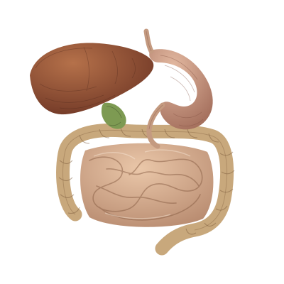
051 / digestiveThin organ contours and coiled intestinal texture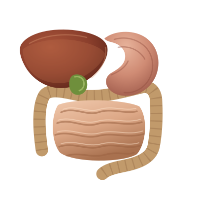
057 / digestiveTonal liver and stomach with readable organ grouping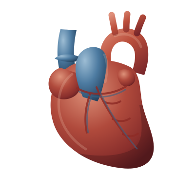
062 / heart exteriorStrong vessel silhouettes and heart volume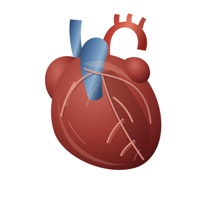
065 / heart exteriorFine surface vessels and soft shading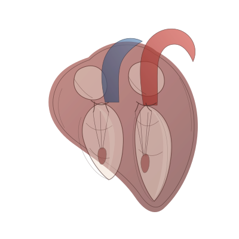
074 / heart sectionDelicate cutaway with visible chordae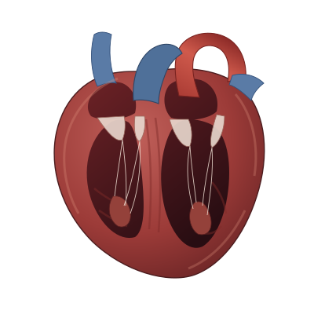
079 / heart sectionDistinct chambers and thick septal wall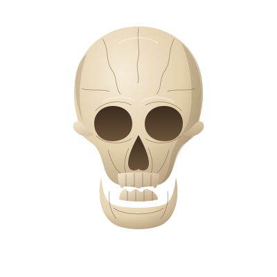
083 / skullMore believable facial proportions than rounder variants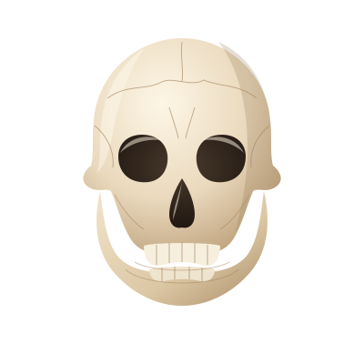
087 / skullFine cranial lines and readable mandible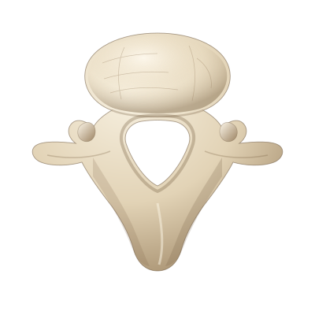
093 / vertebraOpen foramen and visible processes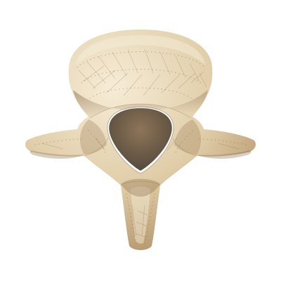
096 / vertebraSubtle bone hatching and body volumeFinished 20 November 2026, Singapore. Model responses reported cost 0. Failed or incomplete generations were retried and were not counted among the 100 completed candidates.